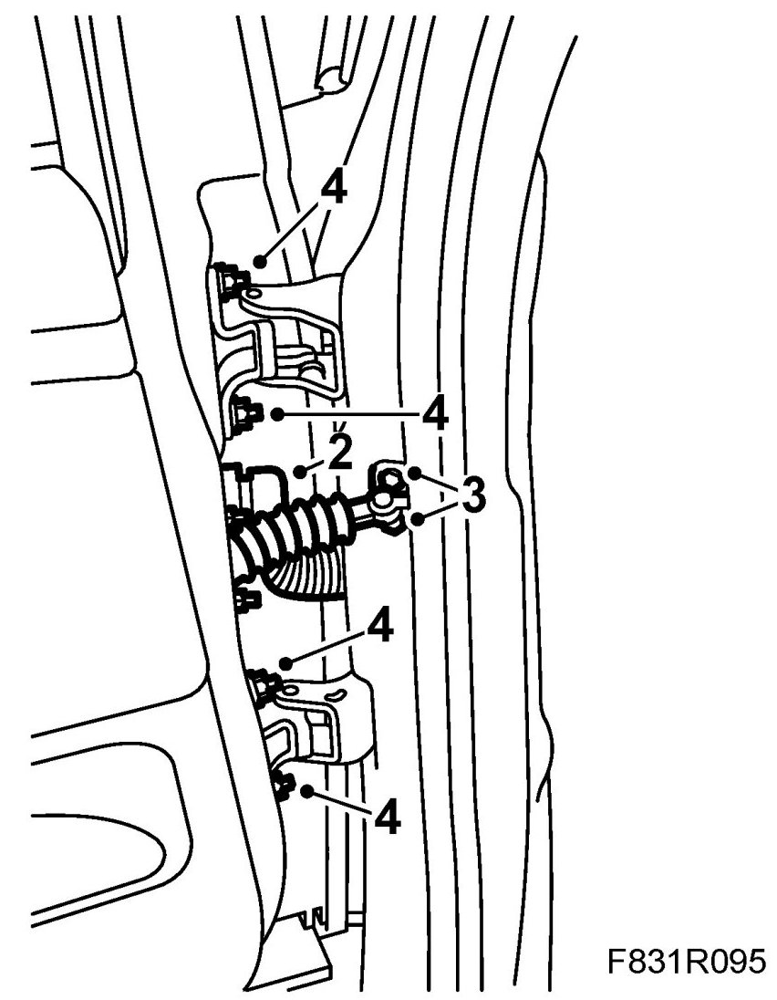
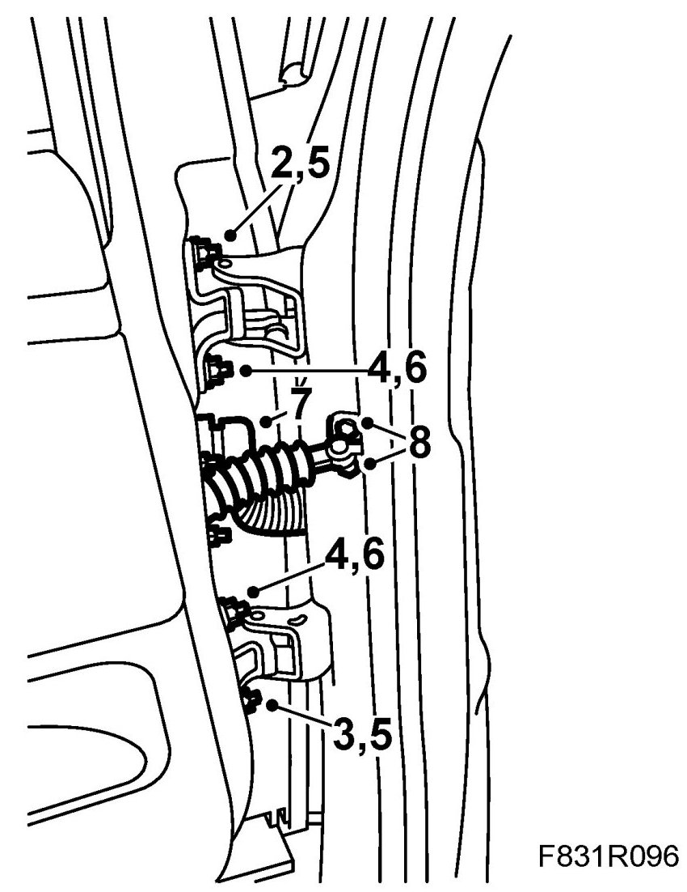

Rear Door: Service and Repair
Rear Doors
To remove
If the door was adjusted correctly before removal then no adjustment is necessary. It is the upper hinge's top hole and the lower hinge's lower hole that guide the door to its original position.
1. Open the door.

2. Part the connector.
3. Remove the door catch arm bolts from the B-pillar.
4. Remove the hinge's nuts. Remove the top nut last.
5. Lift the door of the hinges.
To fit
If the door was adjusted correctly before removal then no adjustment is necessary. It is the upper and lower hinge lower holes that guide the door to its original position.
1. Lift the door and guide the studs into the hinges.

2. Mount the upper nut first.
3. Mount the lower nut first.
4. Finally mount the two middle nuts.
5. Tighten the upper and lower nuts first.
6. Finally tight the middle nuts.
7. Plug in the connector.
8. Fit the door catch arm's screws.
9. Check the door's fit and all the door's electrical functions.
Cars with pinch protection: Perform Programming of the pinch protection.